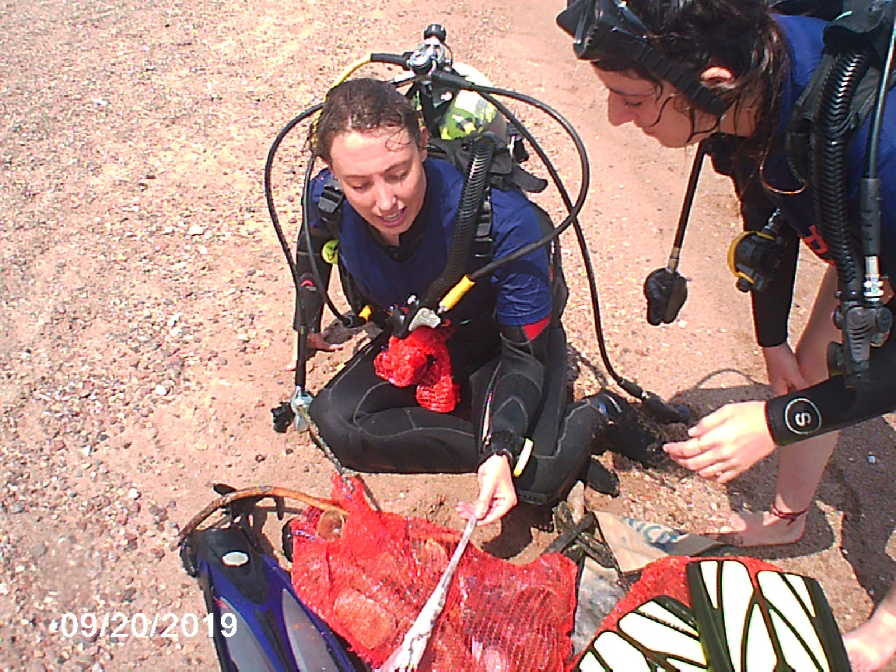
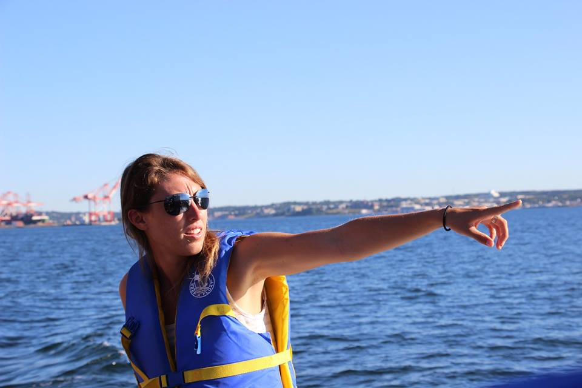

Teaching
 Environmental Processes in the Gulf of Aqaba
Project instructor/ Graduate TA | 5 years: 2015-2020
InterUniversity Institute in Eilat
Environmental Processes in the Gulf of Aqaba is an intensive course with the first half of the course dedicated to lectures and basic understanding of the different processes in the marine ecosystem. During this portion of the course I would assist the professor in setting up lectures and dedicated study sessions where I would lead discussions about the lectures and answer questions from the students. The second half of the course is dedicated to the research component. I lead this segment of the course, working with the students to create productive engaging questions. Then conducting the research necessary to resolve their questions while fostering future research opportunities. This section resulted in teaching the students how to write full research reports (usually their first one) then grading and reporting the results to the professor. Overall TA evaluation (n = 120): 4.9/5.0.
Quantitative Methods for the Analysis of Marine Communities
Course instructor | 3 years: 2016, 2018 & 2020
InterUniversity Institute in Eilat
I co-instructed this intensive course for multiple years. To get the most biological insight out of hard-earned data, good insight into the statistical analyses used to analyze it, is necessary. Following this rationale, the course expanded on the basics laid in an introductory Biostatistics courses, and introduced some of the more advanced analytical tools which are the staple of quantitative ecological research. This course combined learning complex statistical methods with real world biological questions. Throughout the course students took part in 3 large mock experiments, collecting in situ data and applying such concepts as: how to validate and curate a data-set, assumptions of the general-linear model and what to do when the data deviate from them, how to deal with multiple predictor variables, measures of diversity & Rarefaction, constrained & unconstrained ordination, cluster analysis and Model-based multivariate analysis (including GLM).Overall TA evaluation (n = 64): 4.8/5.0.
Plankton Taxonomy and Ecology
Graduate TA | 4 years: 2015, 2017, 2018 & 2020
InterUniversity Institute in Eilat
The course focused on plankton recognition and its adaptations to the pelagic life. The systematics, biology and ecology of major groups of plankton, including viruses, bacteria, phytoplankton and zooplankton were studied. In addition, the course dealt with methodological aspects of sampling, identification and quantification of planktonic organisms. During the course, a short research project was conducted and integrated the sampling methods and the identification of the plankton groups learned during the course. As the TA for the course, I was responsible for conducting identification labs, coordinating and conducting field sampling expeditions, monitoring and aiding with the final research projects as well as creating the final and grading the projects.Overall TA evaluation (n = 96): 4.9/5.0.
BIOL1885: Spring21 S01 Human Anatomy and Biomechanics
Graduate TA | 1 semester: 2021
Brown University
As a teaching assistant for the first verson of this course ran entirely remotely, I instructed and graded lab sections and proctored exams. Lab topics of structure of the human body ranged from the perspectives of biomechanics, evolution, and development, focusing on the musculoskeletal system, sensory systems, and the complex, multifunctional organ of the human skin. Overall TA evaluation (n = 60): 4.9/5.0.